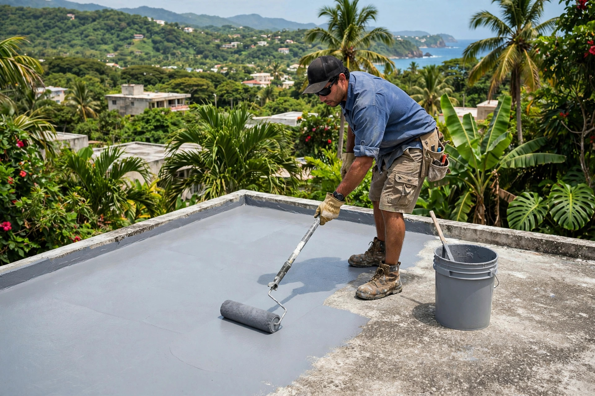
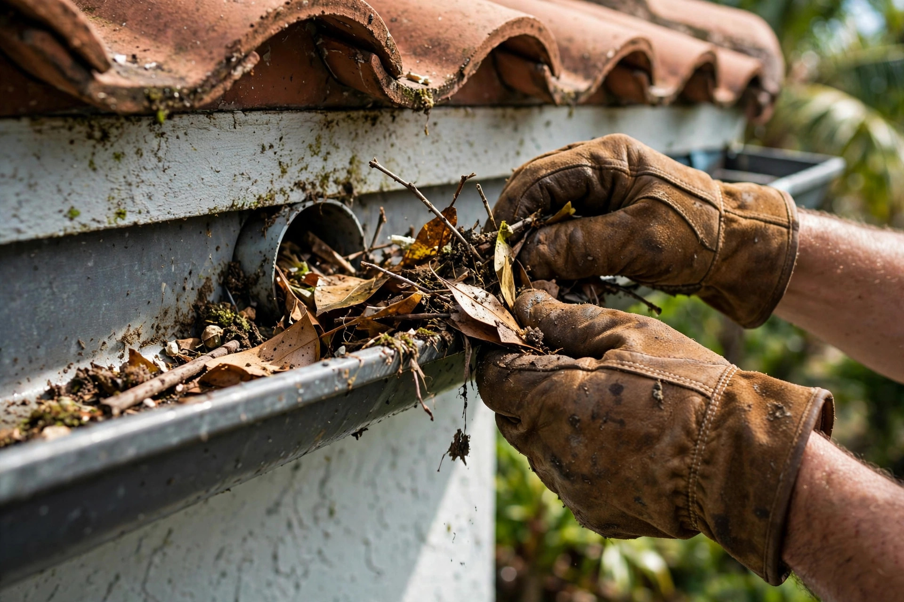
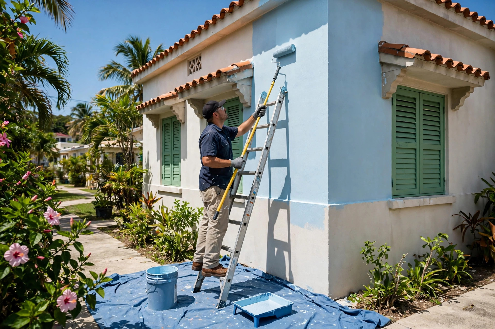
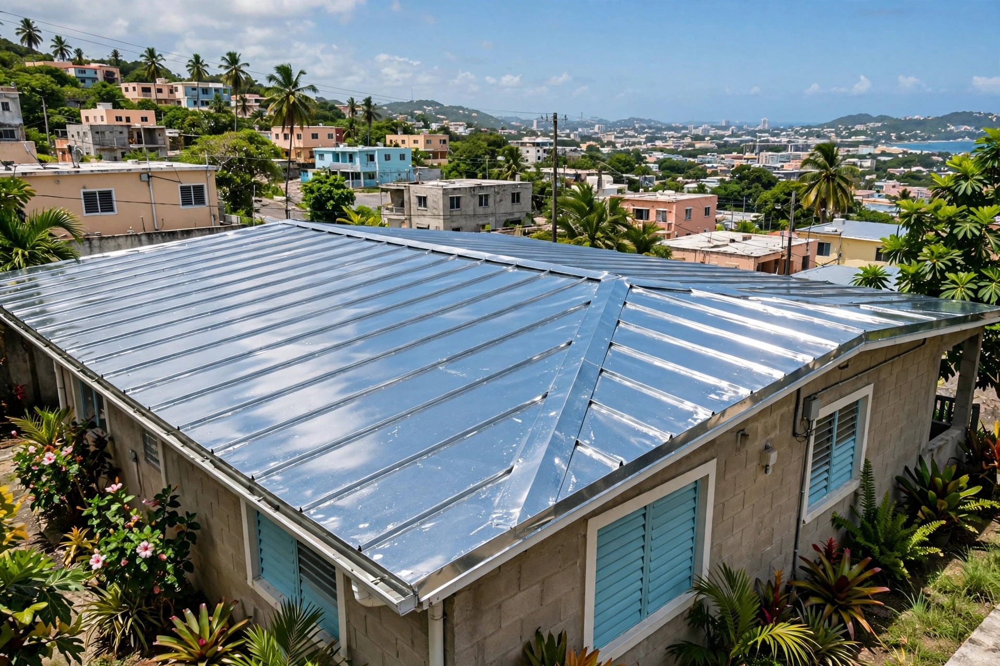

Servicios generales a domicilio: sellado de techos, pintura y reparaciones. Vamos hasta tu casa en el metro y pueblos limítrofes.
Mantenimiento, sellado y pintura a domicilio: así dejamos cada casa.




Mantenimiento y servicios generales: vamos hasta tu casa.
Impermeabilización para la lluvia del norte.
Interior y exterior con acabado parejo.
Filtraciones, grietas y detalles del hogar.
El cuidado de tu casa en buenas manos.
Limpieza profunda de techos y paredes.
Escríbenos por WhatsApp y cotizamos.
Servicio a domicilio en el norte: llegamos, resolvemos y dejamos limpio.
Servimos el área metro y pueblos limítrofes.
Vamos hasta tu casa: sin vueltas, sin esperas.
Techo, pintura y reparaciones con un solo equipo.
Cotización por WhatsApp al 939-259-9914.
Lo que todo dueño de casa pregunta antes de dar mantenimiento.
Depende del sistema aplicado y de la exposición al sol y la lluvia del norte. Se recomienda una revisión antes de la temporada de lluvia para decidir si toca mantenimiento.
Sí. Se corrigen las grietas y los puntos donde se empoza el agua antes de sellar, para que el sistema quede parejo.
Sí, el lavado a presión es parte de la preparación del techo o la pared antes de aplicar sellador o pintura.
Por WhatsApp al 939-259-9914: envíanos fotos y te respondemos. Servimos el área metro y pueblos limítrofes del norte.
Trabajamos el área metro y los pueblos limítrofes del norte de Puerto Rico. Escríbenos y confirmamos el tuyo.
Esta página es una muestra de lo que hacemos en ManuPro. Llevamos tu negocio a internet con oferta de lanzamiento por tiempo limitado.